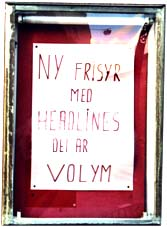
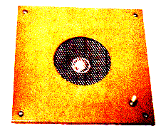

Adhacking Adhacking
Today, we are so awash in corporate propaganda that we're like the fish that can't see the water that surrounds us. Of course we remember the storyline of most of the television ads we see, but what brand and was that cleaning fluid mark "super extra wash" or "prowash ultra"?

This effect, our tendency to miss the "point" of the commercial spot has only one remedy - more advertising. But like TBC bacteria, we're rapidly becoming immune to the standard cure. Some months ago here in Sweden, one of our biggest coffee brands announced the contest "our best commmercial spot" trying to draw even more attention to their popular line of corporate propaganda films.
"Corporations are basically lust driven enterprises"
The film that immmediately came to mind as the best film was, as I soon realized, made by a rival brand that had similar commercials. There are so many coffee commercials now that they have started to interbreed, and by making a commercial in the same style as a more established advertisement series, it's possible to hi-jack much of the original's impact. At first, I thought I would call the company and make enquiries about the competition. However, a couple of days later I realized I had completely forgotten which company it was let alone which commercials they've made. I have been manically ad-surfing, channel-flipping, in a desperate search for a follow-up or some piece of intel. Needless to say, I haven't found the slightest trace that this competition has ever taken place.
The between-show time, the advert time, is what makes up the marketable portion of modern television. This is the time that brings up the revenues that makes a cable company turn a profit. Here memes meet to breed and roam the mindscape of millions of hapless viewers.
Even "norms" do adhacking these days; the latest gimmick du jour here in Sweden is a line of CD's entitled "Dom bästa reklamlåtarna" meaning "the best commercial songs". The movie "Demolition Man" ran on state television the other night, in this movie people listen to commercial jingles as _real_ music - a clearly intended gag in the film. Now reality is catching up - we're moving towards the flatscreen future presented in the film and we're starting to take interesting measures to hack the commercial onslaught TV presents us with.
The music on the already mentioned CD has been made famous by its use in commercials. The music definitely sells better after having been used in an ad. Also the feeling of the song is enhanced by its use in a spot, an intense moment of cleverly constructed reality intended to boost sales for a product. But now, were swimming in such a mass of advertisment that we are having trouble remembering which commercial belongs to which brand.
When advertisment and the feeling - brand connection is quickly eroding out, what is left? The act of buying (and drinking) coffee has been transported into a lush hyperreality where we act and feel like on commercials. The same goes for the hyperreal songs of commercials, we forget the brand name and go for the pleasant feeling that the dumb corporations so kindly have provided us with, and we don't even have to buy their product!

"Cries of 'Seize the Simulacra!' echo through satellite uplinks and reverberate in the cable TV rhizomes."
Even if corporations are the big scare, the big crook in this world, we still have to use them if we don't go completely luddite. Yes, there's alternative distribution systems and so on but, some of the products we absolutely gotta have, ask any woman if she'd like to use old rags or hi-tech sterilized wing-equipped sanitary towel. Being upset about the state of the world leads just to irritation, why not _enjoy_ the crookedness and absurdity of late 20th century. Face it - it aint' too bad to live in a demented surrealist world.
by Joel Westerberg